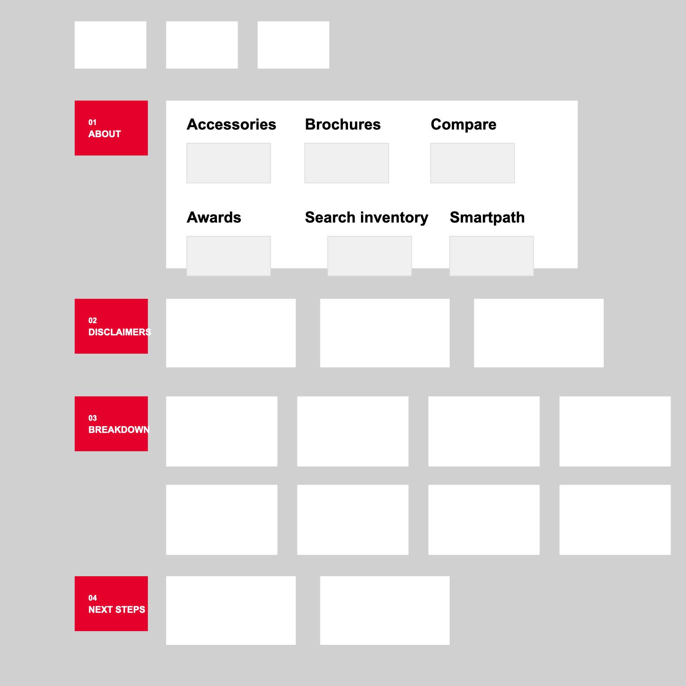
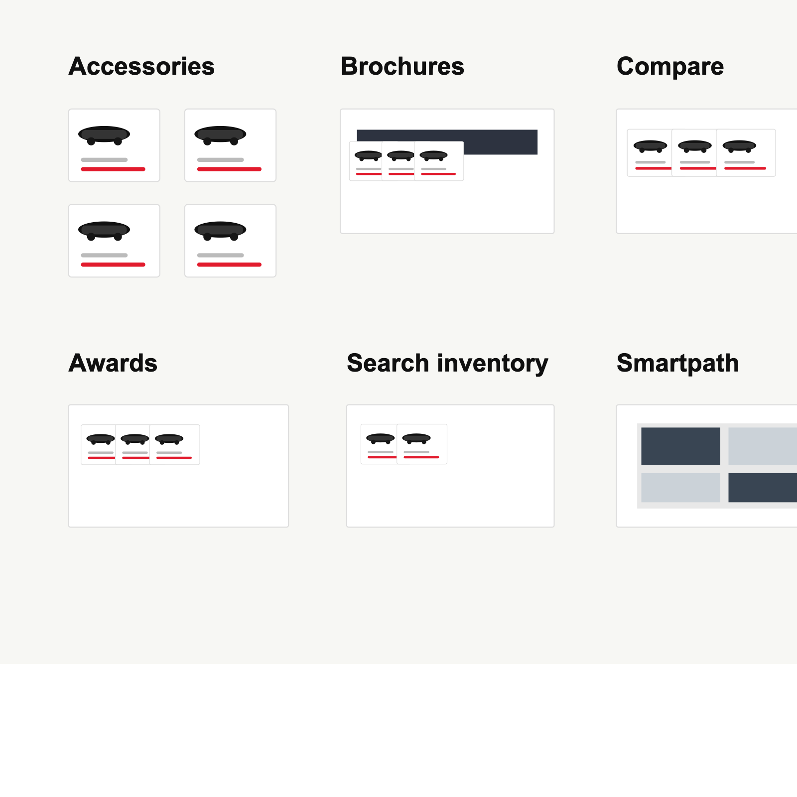
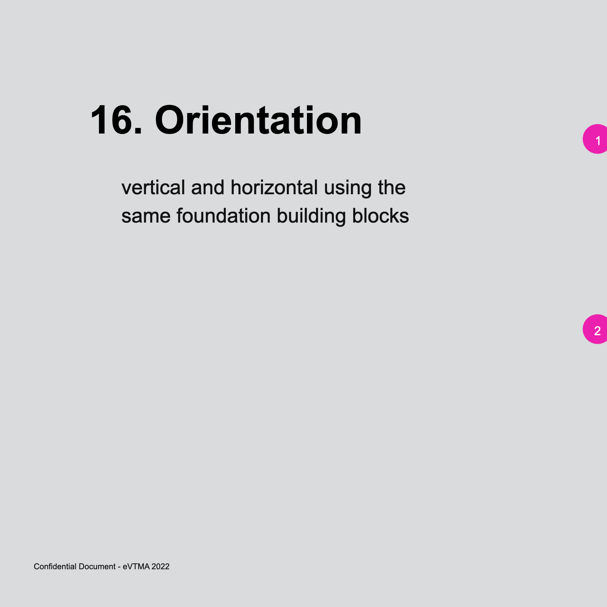
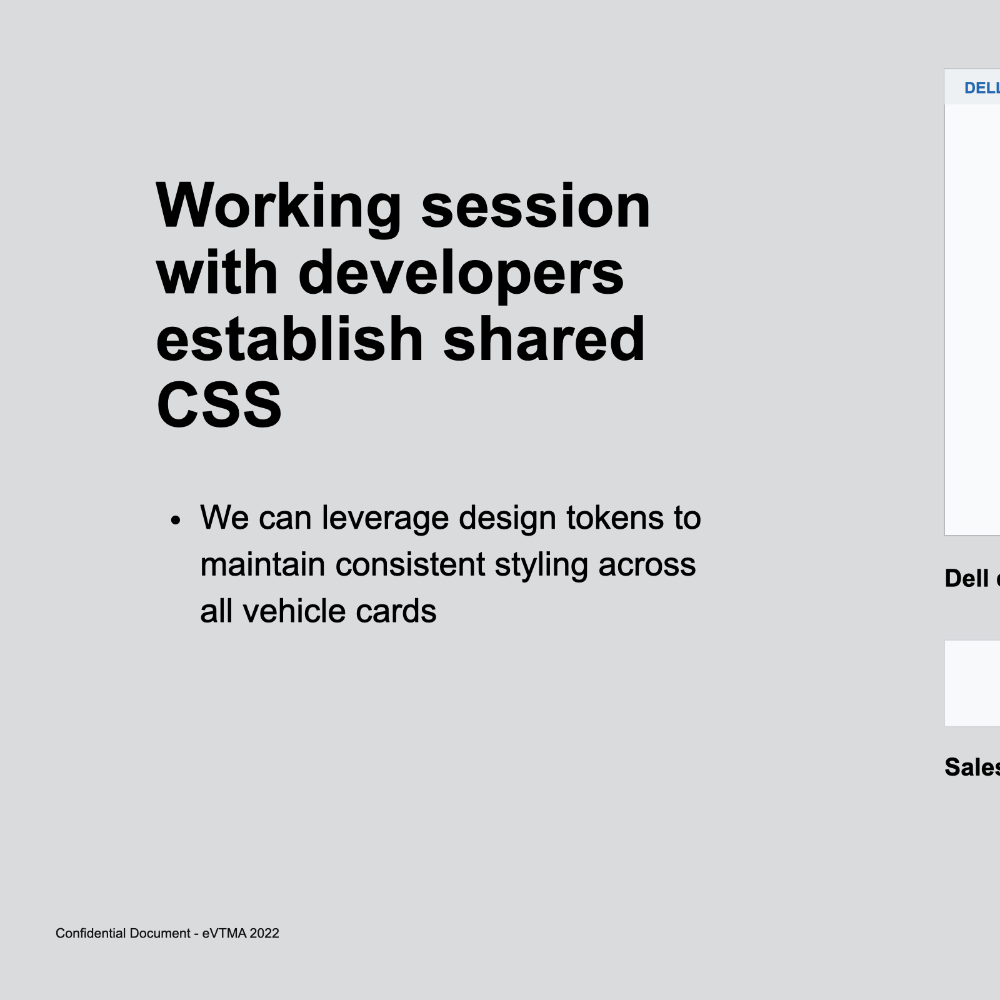

Unifying a fragmented component across a 10-surface digital ecosystem, from inventory search and comparison flows to dealer experiences and the vehicle configurator.
Client
Toyota
Project
Vehicle Card Research
Role
Content to confirm
Timeline
Content to confirm
Team
Content to confirm
Tools
Figma, FigJam

Selected Rev2 Figma section showing the full vehicle-card research deck structure.
At a glance
A repeated pattern with no shared source of truth.
The vehicle card is one of the most repeated, and most inconsistent, patterns across Toyota's digital ecosystem. It appears on the home page, inside inventory search, across comparison flows, inside dealer sites, and in the vehicle configurator, each time with different content, styling, and interaction rules.
This project mapped every variant, decomposed the card into its atomic parts, and produced a unified specification the design system team could ship as a single, configurable component.
Project type
Design systems research, cross-product audit, component specification.
10surfaces audited
12component zones identified
1configurable system target
The challenge
Ten surfaces, ten different vehicle cards.
The vehicle card is the workhorse of Toyota's digital ecosystem. It is the component users see whenever they browse, compare, configure, or shop. Across the 10 digital surfaces where it lives, no two implementations were alike.
Brand inconsistency. A user configuring a vehicle on one page, then comparing options on another, saw what looked like two different products from two different brands.
Engineering duplication. Each surface team had built its own variant. New features like EV badging or incentive banners had to be implemented repeatedly.
No shared vocabulary. Product teams argued about what a vehicle card should show without a common framework for discussing trade-offs.
Content to confirm
Add any specific metrics on the pain: duplicated engineering hours, bug tickets, failed user testing moments, accessibility issues, or a directional number such as component debt share.
The approach
Audit first. Decompose second. Systematize third.
The instinct on a project like this is to jump to the new design. I resisted that. If we did not first understand why the card had diverged across 10 surfaces, any new unified version would get rejected by teams who felt their edge cases were not represented.
01
Cross-surface audit
I catalogued every instance of the vehicle card across Accessories, Brochures, Compare, All Vehicles, Awards, Search Inventory, Smartpath, VCR, Dealer Site, and Home Page Vehicle Selector. For each, I captured the rendered card, documented the content it included, noted the interaction model, and flagged unique constraints.

Audit grid: 10 vehicle card instances across Toyota surfaces.
What I found was not chaos. It was legitimate divergence. Compare optimized for dense side-by-side scan. The home selector optimized for emotional hero imagery. Smartpath optimized for dealer handoff. A unified component could not erase those differences. It had to absorb them as configuration.
02
Component breakdown
I decomposed the card into atomic parts so every surface could express its variant as a composition, not a reinvention. The breakdown produced discrete zones, each with its own rules, variants, and optionality.
Image area. Aspect ratio, vehicle angle, and background treatment.
Decorator. Visual layer for color swatches, trim accents, or overlays.
Vehicle info. Year, make, model, trim, and core metadata.
CTA. Primary action, with rules for when each action type applies.
Badge and banner. EV, new-for-year, incentive, availability, award, or recall callouts.
Subframe, stepper, and selection state. Context-specific content, flow progression, hover, focus, selected, and disabled behavior.

Orientation slide: vertical and horizontal variants use the same foundation building blocks.
03
Unified specification
The deliverable tied the audit and breakdown together into a single reference the design system team could adopt and product teams could build against. Every divergence from the audit was accounted for, not eliminated, but represented as a configuration of a single component.
Content to confirm
Clarify the exact system output: Figma library, spec document, tokens, guidelines, engineering API, or a combination of these.

Developer working session: aligning shared CSS and token strategy across all vehicle cards.
Tradeoffs
The hard calls.
This section should capture the moments where the system had to balance consistency, local surface needs, engineering complexity, and release scope.
Content to confirm
Pick 2 to 3 real tradeoffs: where a surface team wanted to keep a unique variant, where v1 scope had to narrow, or where configuration risked becoming prop sprawl.
Tradeoff 1
Variant or separate component?
Example to replace: keep the home-page hero card as a variant because the downstream metadata and CTA rules matched the shared card model.
Tradeoff 2
What belongs in v1?
Example to replace: defer accessories-specific styling from v1 if that surface was being rebuilt on a different stack.
Tradeoff 3
Configuration depth
Example to replace: choose a configurable badge slot instead of enumerating every current badge type.
Outcome
What shipped, what changed.
The current draft needs final outcome evidence. Until those details are confirmed, the page keeps the outcome area explicit and easy to update.
Adoption
Surfaces migrated
Content to confirm: which surfaces adopted the unified component, how many migrated, and over what timeline.
Engineering
Duplication reduced
Content to confirm: developer hours saved, implementations consolidated, shared tokens adopted, or variants reduced.
Brand and user impact
Consistency improved
Content to confirm: testing evidence, brand review feedback, analytics lift, or accessibility improvements after migration.
Content to confirm
Add recognition or cascade effects: whether this framework influenced future audits or helped consolidate other fragmented components.
Reflection
What I would take with me.
What I would do differently
Content to confirm: two or three honest reflections, such as teams you would involve earlier, constraints you discovered late, or documentation choices you would tighten.
Three takeaways
Audit earns consensus. A unified spec that arrives without an audit gets rejected. A unified spec that arrives after the audit gets adopted.
Systematize configuration, not content. The right abstraction is not what the card looks like. It is what choices the card lets a team make.
The framework outlives the artifact. The breakdown approach gave the design system team a reusable method for future fragmented components.
Contact
Jeff Chin
Portfolio URL, email, and LinkedIn links are ready to replace when the final contact details are confirmed.